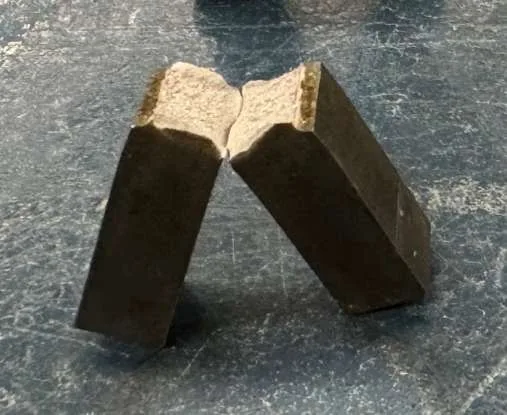
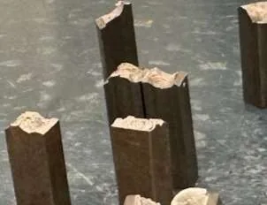
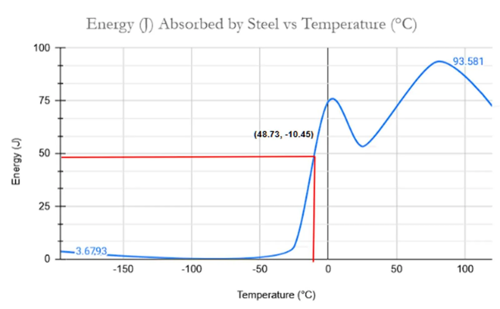
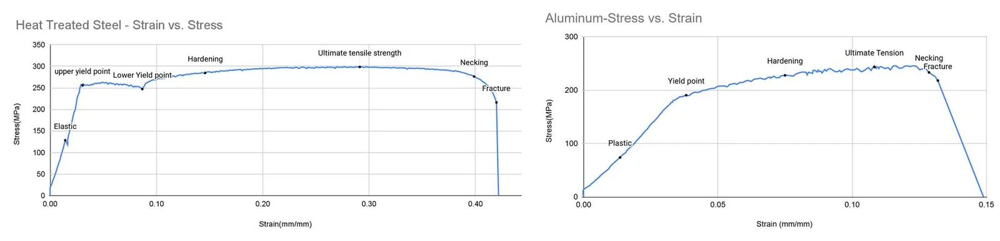
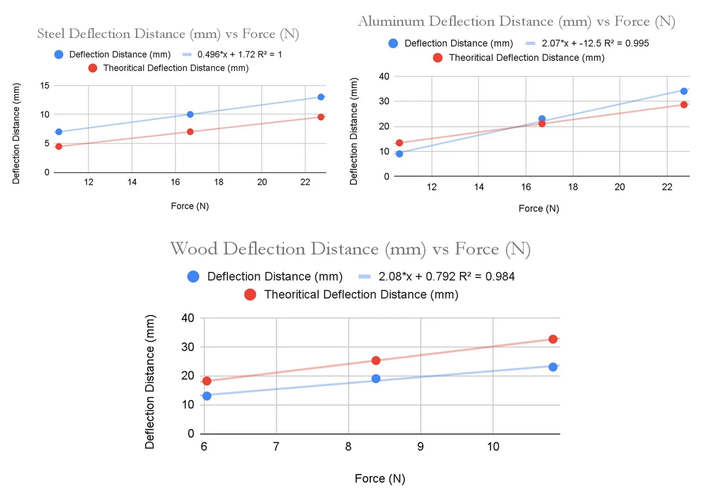
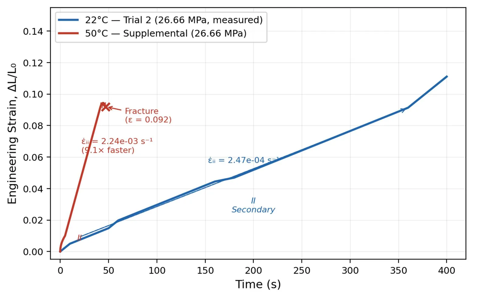

Materials testing labs
A series of mechanical tests to characterize material behaviour, investigate failure and compare measurements with theory.
- Context
- Laboratory coursework
- Timeframe
- 2025–2026
- Tests
- Charpy, fracture, tensile, deflection, creep
- Tools
- Excel, Python, MATLAB
Overview
These labs cover how materials respond to impact, cracks, load, temperature and time. In each one I compared the measured behaviour against the theoretical model.
The course code(s) and lab group size.
Charpy impact and fracture toughness
I performed Charpy impact tests on AISI 1045 steel from −196 °C to 120 °C to map its ductile-to-brittle transition. Absorbed energy reached an upper shelf of about 93.6 J and a lower shelf of about 3.7 J, and I estimated the transition temperature at about −10.45 °C. Fracture toughness was investigated separately using polycarbonate specimens with controlled edge cracks.






Uniaxial tensile testing
I tested steel, heat-treated steel, aluminum, copper and annealed copper specimens, converted load–displacement data into engineering stress–strain curves, and determined Young's modulus, yield strength, ultimate tensile strength, fracture stress and percent elongation.


Beam deflection
I measured the load–deflection behaviour of steel, aluminum and wood cantilever beams, calculated experimental elastic moduli with classical beam theory, compared them with accepted values, and evaluated stiffness-to-weight for each material.


Creep testing
I investigated time-dependent plastic deformation of Sn–Zn solder under constant uniaxial stress, identifying primary, secondary and tertiary creep and measuring steady-state creep rates at several stress levels. Using the power-law creep relationship, I calculated a stress exponent of n = 5.38.
At a matched stress of 26.66 MPa, the steady-state creep rate rose from 2.47 × 10⁻⁴ s⁻¹ at 22 °C to 2.24 × 10⁻³ s⁻¹ at 50 °C, about 9.1 times faster, and the 50 °C specimen fractured at a strain of 0.092.


Takeaway
Across the series, comparing measurements with theory showed where simple models hold and where real materials depart from them, from the scatter in a transition curve to the gap between measured and predicted beam deflection.
Any discrepancy you explained (for example why the measured steel deflection differs from theory).